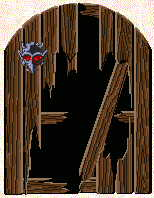

Несколько слов об авторе…

|
Первые пробы появились где-то в середине-конце выпускного класса средней школы, но более зрелые и серьезные вещи - после армии. Часть работ - это песни (т.е. для каждого стихотворения есть музыка, записанная гитарными аккордами). "Широко известен узкому кругу своих почитателей" - авторские песни звучали среди участников КСП региона и его друзей.
Все работы делятся на циклы, объединяющие их по тем или иным признакам
(чаще период и обстановка написания). Каждая страница содержит
эзотерическую аббревиатуру Циклы "Черновики из коробка" и "На жестком диске" (законченные вещи) - это тексты песен и автор ищет единомышленников для написания музыки и созданию из них песен. Издания (print-on-demand): ISBN 978-1312847248 (Altaspera Publishing & Literary Agency Inc.) ISBN-10: 1507852053 / ISBN-13: 978-1507852057 (CreateSpace Independent Publishing Platform / Amazon) ISBN-10: 1514844486 / ISBN-13: 978-1514844489 (CreateSpace Independent Publishing Platform / Amazon) ISBN-10: 1534891471 / ISBN-13: 978-1534891470 (CreateSpace Independent Publishing Platform / Amazon) ISBN 978-5447412401 (© Ridero) Песни автора: © Suno AI Контакты - |